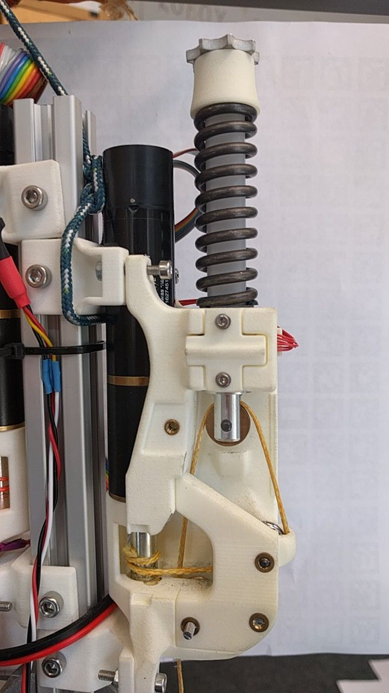

Home¶
Tendon-driven Robots¶
The Roboy team works on tendon-driven robots. These motors don’t move the robot directy, but pull a cord, which translates the motion onto the robot parts. This tendon is attached to a spring, which adds more flexibility to the system and makes its behaviour more human-like.
{kind=link}
When a robot is started, it loses all knowledge about its motor positions. Therefore only relative positions are transmitted, the robot doesn’t know the current absolute pose of its parts.
This shows the need for calibration: A calibration procedure can discover the motion limits and set the robot into a standartized initial pose. The absolute values can be translated into relative ones.
The big picture is to have a calibration program for Roboy 2.0. But as Roboy 2.0 doesn’t exist yet, we have to start with the PaBiLegs. The motors only move in a 2-dimensional space, which makes it easier to calibrate.
Why is there no calibration improvement for Roboy 1.0?¶
Roboy 1.0 does not use ROS and misses joint angle sensors, which makes the implementation very complicated. It is more reasonable to focus on the newer robots, like i.e. PaBiLegs.
Contents: